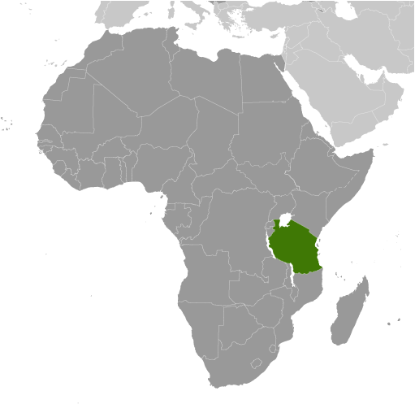
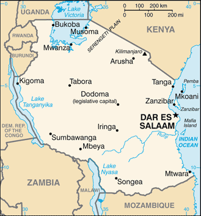
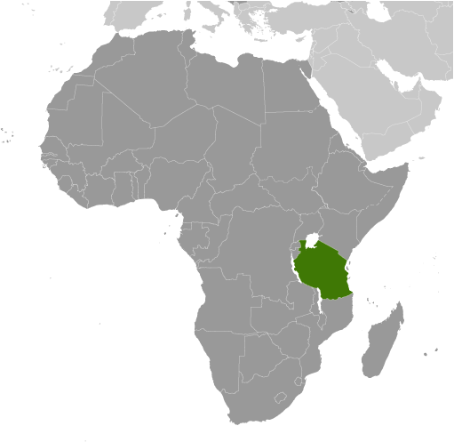
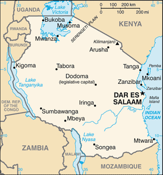

Africa :: TANZANIA
Introduction :: TANZANIA
-
Shortly after achieving independence from Britain in the early 1960s, Tanganyika and Zanzibar merged to form the United Republic of Tanzania in 1964. One-party rule ended in 1995 with the first democratic elections held in the country since the 1970s. Zanzibar's semi-autonomous status and popular opposition led to two contentious elections since 1995, which the ruling party won despite international observers' claims of voting irregularities. The formation of a government of national unity between Zanzibar's two leading parties succeeded in minimizing electoral tension in 2010.
Geography :: TANZANIA
-
Eastern Africa, bordering the Indian Ocean, between Kenya and Mozambique6 00 S, 35 00 EAfricatotal: 947,300 sq kmland: 885,800 sq kmwater: 61,500 sq kmnote: includes the islands of Mafia, Pemba, and Zanzibarcountry comparison to the world: 32more than six times the size of Georgia; slightly larger than twice the size of Californiatotal: 4,161 kmborder countries (8): Burundi 589 km, Democratic Republic of the Congo 479 km, Kenya 775 km, Malawi 512 km, Mozambique 840 km, Rwanda 222 km, Uganda 391 km, Zambia 353 km1,424 kmterritorial sea: 12 nmexclusive economic zone: 200 nmvaries from tropical along coast to temperate in highlandsplains along coast; central plateau; highlands in north, southmean elevation: 1,018 melevation extremes: lowest point: Indian Ocean 0 mhighest point: Kilimanjaro 5,895 m (highest point in Africa)hydropower, tin, phosphates, iron ore, coal, diamonds, gemstones, gold, natural gas, nickelagricultural land: 43.7%arable land 14.3%; permanent crops 2.3%; permanent pasture 27.1%forest: 37.3%other: 19% (2011 est.)1,840 sq km (2012)the largest and most populous East African country; population distribution is extremely uneven, but greater population clusters occur in the northern half of country and along the east coastflooding on the central plateau during the rainy season; droughtvolcanism: limited volcanic activity; Ol Doinyo Lengai (2,962 m) has emitted lava in recent years; other historically active volcanoes include Kieyo and Merusoil degradation; deforestation; desertification; destruction of coral reefs threatens marine habitats; recent droughts affected marginal agriculture; wildlife threatened by illegal hunting and trade, especially for ivoryparty to: Biodiversity, Climate Change, Climate Change-Kyoto Protocol, Desertification, Endangered Species, Hazardous Wastes, Law of the Sea, Ozone Layer Protection, Wetlandssigned, but not ratified: none of the selected agreementsKilimanjaro is the highest point in Africa and one of only two mountains on the continent that has glaciers (the other is Mount Kenya); bordered by three of the largest lakes on the continent: Lake Victoria (the world's second-largest freshwater lake) in the north, Lake Tanganyika (the world's second deepest) in the west, and Lake Nyasa (Lake Malawi) in the southwest
People and Society :: TANZANIA
-
53,950,935note: estimates for this country explicitly take into account the effects of excess mortality due to AIDS; this can result in lower life expectancy, higher infant mortality, higher death rates, lower population growth rates, and changes in the distribution of population by age and sex than would otherwise be expected (July 2017 est.)country comparison to the world: 26noun: Tanzanian(s)adjective: Tanzanianmainland - African 99% (of which 95% are Bantu consisting of more than 130 tribes), other 1% (consisting of Asian, European, and Arab); Zanzibar - Arab, African, mixed Arab and AfricanKiswahili or Swahili (official), Kiunguja (name for Swahili in Zanzibar), English (official, primary language of commerce, administration, and higher education), Arabic (widely spoken in Zanzibar), many local languagesnote: Kiswahili (Swahili) is the mother tongue of the Bantu people living in Zanzibar and nearby coastal Tanzania; although Kiswahili is Bantu in structure and origin, its vocabulary draws on a variety of sources including Arabic and English; it has become the lingua franca of central and eastern Africa; the first language of most people is one of the local languagesChristian 61.4%, Muslim 35.2%, folk religion 1.8%, other 0.2%, unaffiliated 1.4%note: Zanzibar is almost entirely Muslim (2010 est.)Tanzania has the largest population in East Africa and the lowest population density; almost a third of the population is urban. Tanzania’s youthful population – about two-thirds of the population is under 25 – is growing rapidly because of the high total fertility rate of 4.8 children per woman. Progress in reducing the birth rate has stalled, sustaining the country’s nearly 3% annual growth. The maternal mortality rate has improved since 2000, yet it remains very high because of early and frequent pregnancies, inadequate maternal health services, and a lack of skilled birth attendants – problems that are worse among poor and rural women. Tanzania has made strides in reducing under-5 and infant mortality rates, but a recent drop in immunization threatens to undermine gains in child health. Malaria is a leading killer of children under 5, while HIV is the main source of adult mortalityFor Tanzania, most migration is internal, rural to urban movement, while some temporary labor migration from towns to plantations takes place seasonally for harvests. Tanzania was Africa’s largest refugee-hosting country for decades, hosting hundreds of thousands of refugees from the Great Lakes region, primarily Burundi, over the last fifty years. However, the assisted repatriation and naturalization of tens of thousands of Burundian refugees between 2002 and 2014 dramatically reduced the refugee population. Tanzania is increasingly a transit country for illegal migrants from the Horn of Africa and the Great Lakes region who are heading to southern Africa for security reasons and/or economic opportunities. Some of these migrants choose to settle in Tanzania.0-14 years: 43.74% (male 11,921,393/female 11,678,536)15-24 years: 19.86% (male 5,361,747/female 5,351,794)25-54 years: 29.88% (male 8,098,183/female 8,020,289)55-64 years: 3.51% (male 836,313/female 1,055,347)65 years and over: 3.02% (male 687,118/female 940,215) (2017 est.)total dependency ratio: 93.4youth dependency ratio: 87.4elderly dependency ratio: 6potential support ratio: 16.6 (2015 est.)total: 17.7 yearsmale: 17.5 yearsfemale: 18 years (2017 est.)country comparison to the world: 2192.75% (2017 est.)country comparison to the world: 1235.6 births/1,000 population (2017 est.)country comparison to the world: 167.6 deaths/1,000 population (2017 est.)country comparison to the world: 107-0.5 migrant(s)/1,000 population (2017 est.)country comparison to the world: 127the largest and most populous East African country; population distribution is extremely uneven, but greater population clusters occur in the northern half of country and along the east coasturban population: 33% of total population (2017)rate of urbanization: 5% annual rate of change (2015-20 est.)DAR ES SALAAM (capital) 5.116 million; Mwanza 838,000 (2015)at birth: 1.03 male(s)/female0-14 years: 1.02 male(s)/female15-24 years: 1 male(s)/female25-54 years: 1.01 male(s)/female55-64 years: 0.78 male(s)/female65 years and over: 0.75 male(s)/femaletotal population: 0.99 male(s)/female (2016 est.)19.8 yearsnote: median age at first birth among women 25-29 (2015/16 est.)398 deaths/100,000 live births (2015 est.)country comparison to the world: 27total: 39.9 deaths/1,000 live birthsmale: 42 deaths/1,000 live birthsfemale: 37.8 deaths/1,000 live births (2017 est.)country comparison to the world: 46total population: 62.6 yearsmale: 61.2 yearsfemale: 64.1 years (2017 est.)country comparison to the world: 1974.77 children born/woman (2017 est.)country comparison to the world: 1838.4% (2015/16)5.6% of GDP (2014)country comparison to the world: 1210.03 physicians/1,000 population (2012)0.7 beds/1,000 population (2010)improved:urban: 77.2% of populationrural: 45.5% of populationtotal: 55.6% of populationunimproved:urban: 22.1% of populationrural: 56% of populationtotal: 46.8% of population (2015 est.)improved:urban: 31.3% of populationrural: 8.3% of populationtotal: 15.6% of populationunimproved:urban: 68.7% of populationrural: 91.7% of populationtotal: 84.4% of population (2015 est.)4.7% (2016 est.)country comparison to the world: 131.4 million (2016 est.)country comparison to the world: 633,000 (2016 est.)country comparison to the world: 7degree of risk: very highfood or waterborne diseases: bacterial diarrhea, hepatitis A, and typhoid fevervectorborne diseases: malaria, dengue fever, and Rift Valley feverwater contact diseases: schistosomiasis and leptospirosisanimal contact disease: rabies (2016)8.4% (2016)country comparison to the world: 15213.7% (2015)country comparison to the world: 533.5% of GDP (2014)country comparison to the world: 37definition: age 15 and over can read and write Kiswahili (Swahili), English, or Arabictotal population: 77.9%male: 83.2%female: 73.1% (2015 est.)total: 8 yearsmale: 8 yearsfemale: 8 years (2013)total: 9.4%male: 7%female: 11.7% (2014 est.)country comparison to the world: 120
Government :: TANZANIA
-
conventional long form: United Republic of Tanzaniaconventional short form: Tanzanialocal long form: Jamhuri ya Muungano wa Tanzanialocal short form: Tanzaniaformer: United Republic of Tanganyika and Zanzibaretymology: the country's name is a combination of the first letters of Tanganyika and Zanzibar, the two states that merged to form Tanzania in 1964presidential republicname: Dodoma; note - officially changed in 1996; serves as the meeting place for the National Assembly; Dar es Salaam remains the de facto capital, the country's largest city and commercial center, and the site of the executive branch offices and diplomatic representationgeographic coordinates: 6 48 S, 39 17 Etime difference: UTC+3 (8 hours ahead of Washington, DC, during Standard Time)30 regions; Arusha, Dar es Salaam, Dodoma, Geita, Iringa, Kagera, Kaskazini Pemba (Pemba North), Kaskazini Unguja (Zanzibar North), Katavi, Kigoma, Kilimanjaro, Kusini Pemba (Pemba South), Kusini Unguja (Zanzibar Central/South), Lindi, Manyara, Mara, Mbeya, Mjini Magharibi (Zanzibar Urban/West), Morogoro, Mtwara, Mwanza, Njombe, Pwani (Coast), Rukwa, Ruvuma, Shinyanga, Simiyu, Singida, Tabora, Tanga26 April 1964 (Tanganyika united with Zanzibar to form the United Republic of Tanganyika and Zanzibar); 29 October 1964 (renamed United Republic of Tanzania); notable earlier dates: 9 December 1961 (Tanganyika became independent from UK-administered UN trusteeship); 10 December 1963 (Zanzibar became independent from UK)Union Day (Tanganyika and Zanzibar), 26 April (1964)history: several previous; latest adopted 25 April 1977; note - progress enacting a new constitution drafted in 2014 by the Constituent Assembly has been stalledamendments: proposed by the National Assembly; passage of amendments to constitutional articles including those on sovereignty of the United Republic, the authorities and powers of the government, the president, the Assembly, and the High Court requires two-thirds majority vote of the mainland Assembly membership and of the Zanzibar House of Representatives membership; House of Representatives approval of other amendments is not required (2017)English common law; judicial review of legislative acts limited to matters of interpretationhas not submitted an ICJ jurisdiction declaration; accepts ICCt jurisdictioncitizenship by birth: nocitizenship by descent only: at least one parent must be a citizen of Tanzania; if a child is born abroad, the father must be a citizen of Tanzaniadual citizenship recognized: noresidency requirement for naturalization: 5 years18 years of age; universalchief of state: President John MAGUFULI (since 5 November 2015); Vice President Samia SULUHU (since 5 November 2015); note - the president is both chief of state and head of governmenthead of government: President John MAGUFULI, Dr. (since 5 November 2015); Vice President Samia SULUHU (since 5 November 2015); note - Prime Minister Kassim Majaliwa MAJALIWA (since 20 November 2015) has authority over the day-to-day functions of the government, is the leader of government business in the National Assembly, and is head of the Cabinetcabinet: Cabinet appointed by the president from among members of the National Assemblyelections/appointments: president and vice president directly elected on the same ballot by simple majority popular vote for a 5-year term (eligible for a second term); election last held on 25 October 2015 (next to be held in October 2020); prime minister appointed by the presidentelection results: John MAGUFULI elected president; percent of vote - John MAGUFULI (CCM) 58.5%, Edward LOWASSA (CHADEMA) 40%, other 1.5%note: Zanzibar elects a president as head of government for matters internal to Zanzibar; election held on 25 October 2015 was annulled by the Zanzibar Electoral Commission and rerun on 20 March 2016; President Ali Mohamed SHEIN reelected; percent of vote - Ali Mohamed SHEIN (CCM) 91.4%, Hamad Rashid MOHAMED (ADC) 3%, other 5.6%description: unicameral National Assembly or Parliament (Bunge) (393 seats; 264 members directly elected in single-seat constituencies by simple majority vote, 113 women directly elected by proportional representation vote, 5 indirectly elected by simple majority vote by the Zanzibar House of Representatives, 10 appointed by the president, and 1 seat reserved for the attorney general; members serve a 5-year term); note - in addition to enacting laws that apply to the entire United Republic of Tanzania, the National Assembly enacts laws that apply only to the mainland; Zanzibar has its own House of Representatives or Baraza La Wawakilishi (82 seats; 50 members directly elected in single-seat constituencies by simple majority vote, 20 women directly elected by proportional representation vote, 10 appointed by the Zanzibar president, 1 seat for the House speaker, and 1 ex-officio seat for the attorney general; elected members serve a 5-year term)elections: Tanzania National Assembly and Zanzibar House of Representatives elections last held on 25 October 2015 (next National Assembly election to be held in October 2020; next Zanzibar election NA; note the Zanzibar Electoral Commission annulled the 2015 election; no date for repoll announced as of early November)election results: National Assembly - percent of vote by party - CCM 55%, Chadema 31.8%, CUF 8.6%, other 2.2%; seats by party - CCM 253, Chadema 70%, CUF 42%, other 2Zanzibar House of Representatives - election annulledhighest court(s): Court of Appeal of the United Republic of Tanzania (consists of the chief justice and 14 justices); High Court of the United Republic for Mainland Tanzania (consists of the principal judge and 30 judges organized into commercial, land, and labor courts); High Court of Zanzibar (consists of the chief justice and 10 justices)judge selection and term of office: Court of Appeal and High Court justices appointed by the national president after consultation with the Judicial Service Commission for Tanzania, a judicial body of high level judges and 2 members appointed by the national president; Court of Appeal and High Court judges appointed until mandatory retirement at age 60 but terms can be extended; High Court of Zanzibar judges appointed by the national president after consultation with the Judicial Commission of Zanzibar; judges may serve until mandatory retirement at age 65subordinate courts: Resident Magistrates Courts; Kadhi courts (for Islamic family matters); district and primary courtsAlliance for Change and Transparency or ACT [Zitto KABWE]Alliance for Democratic Change or ADC [Miraji ABDALLAH]Civic United Front or CUF (Chama Cha Wananchi [Seif Shariff HAMAD, Secretary General]National Convention for Construction and Reform - Mageuzi or NCCR-M [James Francis MBATCA]Party of Democracy and Development or CHADEMA (Chama Cha Demokrasia na Maendeleo) [Freeman MBOWE]Revolutionary Party or CCM (Chama Cha Mapinduzi) [John MAGUFULI]Tanzania Labor Party or TLP [Augustine MREMA]United Democratic Party or UDP [John Momose CHEYO]note: in March 2014, four opposition parties (CUF, CHADEMA, NCCR-Mageuzi, and the National League for Democracy) united to form Umoja wa Katiba ya Wananchi (Coalition for the People's Constitution) or UKAWA; during local elections held in October, 2014, UKAWA entered one candidate representing the three parties united in the coalitionEconomic and Social Research Foundation or ESRFFree ZanzibarTanzania Media Women's Association or TAMWATanzania Private Sector Foundation or TPSFTwawezaACP, AfDB, AU, C, CD, EAC, EADB, EITI, FAO, G-77, IAEA, IBRD, ICAO, ICC (NGOs), ICCt, ICRM, IDA, IFAD, IFC, IFRCS, ILO, IMF, IMO, IMSO, Interpol, IOC, IOM, IPU, ISO, ITSO, ITU, ITUC (NGOs), MIGA, MONUSCO, NAM, OPCW, SADC, UN, UNAMID, UNCTAD, UNESCO, UNHCR, UNIDO, UNIFIL, UNISFA, UNMISS, UNWTO, UPU, WCO, WFTU (NGOs), WHO, WIPO, WMO, WTOchief of mission: Ambassador Wilson Mutagaywa MASILINGI (since 17 September 2015)chancery: 1232 22nd Street NW, Washington, DC 20037telephone: [1] (202) 939-6125FAX: [1] (202) 797-7408chief of mission: Ambassador (vacant); Charge d'Affaires Inmi PATTERSON (since 5 July 2017)embassy: 686 Old Bagamoyo Road, Msasani, Dar es Salaammailing address: P.O. Box 9123, Dar es Salaamtelephone: [255] (22) 229-4000FAX: [255] (22) 229-4970 or 4971divided diagonally by a yellow-edged black band from the lower hoist-side corner; the upper triangle (hoist side) is green and the lower triangle is blue; the banner combines colors found on the flags of Tanganyika and Zanzibar; green represents the natural vegetation of the country, gold its rich mineral deposits, black the native Swahili people, and blue the country's many lakes and rivers, as well as the Indian OceanUhuru (Freedom) torch, giraffe; national colors: green, yellow, blue, blackname: "Mungu ibariki Afrika" (God Bless Africa)lyrics/music: collective/Enoch Mankayi SONTONGAnote: adopted 1961; the anthem, which is also a popular song in Africa, shares the same melody with that of Zambia, but has different lyrics; the melody is also incorporated into South Africa's anthem
Economy :: TANZANIA
-
Tanzania is one of the world's poorest economies in terms of per capita income, but has achieved high growth rates based on its vast natural resource wealth and tourism. GDP growth in 2009-16 averaged 6%-7% per year. Dar es Salaam used fiscal stimulus measures and easier monetary policies to lessen the impact of the global recession. Tanzania has largely completed its transition to a market economy, though the government retains a presence in sectors such as telecommunications, banking, energy, and mining.The economy depends on agriculture, which accounts for more than one-quarter of GDP, provides 85% of exports, and employs about 65% of the work force. All land in Tanzania is owned by the government, which can lease land for up to 99 years. Proposed reforms to allow for land ownership, particularly foreign land ownership, remain unpopular.The financial sector in Tanzania has expanded in recent years and foreign-owned banks account for about 48% of the banking industry's total assets. Competition among foreign commercial banks has resulted in significant improvements in the efficiency and quality of financial services, though interest rates are still relatively high, reflecting high fraud risk. Recent banking reforms have helped increase private-sector growth and investment.The World Bank, the IMF, and bilateral donors have provided funds to rehabilitate Tanzania's aging infrastructure, including rail and port, which provide important trade links for inland countries. In 2013, Tanzania completed the world's largest Millennium Challenge Compact (MCC) grant, worth $698 million, but in late 2015, the MCC Board of Directors deferred a decision to renew Tanzania’s eligibility because of irregularities in voting in Zanzibar and concerns over the governments use of a controversial cybercrime bill.Under the new government elected in 2015, Tanzania has developed an ambitious development agenda focused on creating a better business environment through improved infrastructure, access to financing, and education progress, but implementing budgets remains challenging for the government.$150.3 billion (2016 est.)$138.7 billion (2015 est.)$128.3 billion (2014 est.)note: data are in 2016 dollarscountry comparison to the world: 76$47.65 billion (2016 est.)7% (2016 est.)7% (2015 est.)7% (2014 est.)country comparison to the world: 15$3,100 (2016 est.)$2,900 (2015 est.)$2,800 (2014 est.)note: data are in 2016 dollarscountry comparison to the world: 19123% of GDP (2016 est.)24.7% of GDP (2015 est.)21.8% of GDP (2014 est.)country comparison to the world: 89household consumption: 61.8%government consumption: 13.9%investment in fixed capital: 33.5%investment in inventories: -6%exports of goods and services: 19.5%imports of goods and services: -22.6% (2016 est.)agriculture: 24.5%industry: 27.6%services: 47.3% (2016 est.)coffee, sisal, tea, cotton, pyrethrum (insecticide made from chrysanthemums), cashew nuts, tobacco, cloves, corn, wheat, cassava (manioc, tapioca), bananas, fruits, vegetables; cattle, sheep, goatsagricultural processing (sugar, beer, cigarettes, sisal twine); mining (diamonds, gold, and iron), salt, soda ash; cement, oil refining, shoes, apparel, wood products, fertilizer10.9% (2016 est.)country comparison to the world: 924.05 million (2016 est.)country comparison to the world: 27agriculture: 66.9%industry: 6.4%services: 26.6% (2014 est.)10.3% (2014 est.)country comparison to the world: 13422.8% (2015 est.)lowest 10%: 2.8%highest 10%: 29.6% (2007)37.6 (2007)34.6 (2000)country comparison to the world: 77revenues: $6.615 billionexpenditures: $8.158 billion (2016 est.)14% of GDP (2016 est.)country comparison to the world: 199-3.3% of GDP (2016 est.)country comparison to the world: 12734% of GDP (2016 est.)34.2% of GDP (2015 est.)country comparison to the world: 1461 July - 30 June5.2% (2016 est.)5.6% (2015 est.)country comparison to the world: 1758.25% (31 December 2010)3.7% (31 December 2009)country comparison to the world: 3915.96% (31 December 2016 est.)16.1% (31 December 2015 est.)country comparison to the world: 34$4.601 billion (31 December 2016 est.)$4.457 billion (31 December 2015 est.)country comparison to the world: 104$7.613 billion (31 December 2016 est.)$7.345 billion (31 December 2015 est.)country comparison to the world: 112$9.625 billion (31 December 2016 est.)$9.483 billion (31 December 2015 est.)country comparison to the world: 107$1.803 billion (31 December 2012 est.)$1.539 billion (31 December 2011 est.)$1.264 billion (31 December 2010 est.)country comparison to the world: 102$-2.677 billion (2016 est.)$-4.12 billion (2015 est.)country comparison to the world: 154$5.697 billion (2016 est.)$5.402 billion (2015 est.)country comparison to the world: 103gold, coffee, cashew nuts, manufactures, cottonSwitzerland 15.1%, India 13.8%, South Africa 12.4%, China 7%, Kenya 6.2%, Democratic Republic of the Congo 5.7%, Belgium 5.6% (2016)$8.464 billion (2016 est.)$9.843 billion (2015 est.)country comparison to the world: 103consumer goods, machinery and transportation equipment, industrial raw materials, crude oilChina 20.7%, India 18.1%, UAE 7.5%, South Africa 6%, Japan 4.7% (2016)$4.067 billion (31 December 2016 est.)$4.073 billion (31 December 2015 est.)note: excludes goldcountry comparison to the world: 97$15.21 billion (31 December 2016 est.)$15.05 billion (31 December 2015 est.)country comparison to the world: 99$NA$NATanzanian shillings (TZS) per US dollar -2,177.1 (2016 est.)2,177.1 (2015 est.)1,989.7 (2014 est.)1,654 (2013 est.)1,583 (2012 est.)
Energy :: TANZANIA
-
population without electricity: 37,400,000electrification - total population: 24%electrification - urban areas: 71%electrification - rural areas: 4% (2013)6.025 billion kWh (2015 est.)country comparison to the world: 1154.976 billion kWh (2015 est.)country comparison to the world: 1200 kWh (2016 est.)country comparison to the world: 20971 million kWh (2015 est.)country comparison to the world: 1011.187 million kW (2015 est.)country comparison to the world: 12546% of total installed capacity (2015 est.)country comparison to the world: 1560% of total installed capacity (2015 est.)country comparison to the world: 19847.3% of total installed capacity (2015 est.)country comparison to the world: 436.8% of total installed capacity (2015 est.)country comparison to the world: 830 bbl/day (2016 est.)country comparison to the world: 2040 bbl/day (2014 est.)country comparison to the world: 2030 bbl/day (2014 est.)country comparison to the world: 2020 bbl (1 January 2017 es)country comparison to the world: 2050 bbl/day (2014 est.)country comparison to the world: 20660,000 bbl/day (2015 est.)country comparison to the world: 970 bbl/day (2014 est.)country comparison to the world: 20758,700 bbl/day (2014 est.)country comparison to the world: 751.1 billion cu m (2015 est.)country comparison to the world: 651.5 billion cu m (2015 est.)country comparison to the world: 900 cu m (2013 est.)country comparison to the world: 1990 cu m (2013 est.)country comparison to the world: 2006.513 billion cu m (1 January 2017 es)country comparison to the world: 9010 million Mt (2013 est.)country comparison to the world: 104
Communications :: TANZANIA
-
total subscriptions: 129,597subscriptions per 100 inhabitants: less than 1 (July 2016 est.)country comparison to the world: 139total: 40,044,186subscriptions per 100 inhabitants: 76 (July 2016 est.)country comparison to the world: 37general assessment: telecommunications services are marginal; system operating below capacity and being modernized for better servicedomestic: fixed-line telephone network inadequate with less than 1 connection per 100 persons; mobile-cellular service, aided by multiple providers, is increasing rapidly and exceeds 75 telephones per 100 persons; trunk service provided by open-wire, microwave radio relay, tropospheric scatter, and fiber-optic cable; some links being made digitalinternational: country code - 255; landing point for the EASSy fiber-optic submarine cable system linking East Africa with Europe and North America; satellite earth stations - 2 Intelsat (1 Indian Ocean, 1 Atlantic Ocean) (2016)a state-owned TV station and multiple privately owned TV stations; state-owned national radio station supplemented by more than 40 privately owned radio stations; transmissions of several international broadcasters are available (2007).tztotal: 6,822,754percent of population: 13.0% (July 2016 est.)country comparison to the world: 51
Transportation :: TANZANIA
-
number of registered air carriers: 5inventory of registered aircraft operated by air carriers: 17annual passenger traffic on registered air carriers: 1,239,707annual freight traffic on registered air carriers: 2,337,440 mt-km (2015)5H (2016)166 (2013)country comparison to the world: 34total: 10over 3,047 m: 22,438 to 3,047 m: 21,524 to 2,437 m: 4914 to 1,523 m: 2 (2013)total: 156over 3,047 m: 11,524 to 2,437 m: 24914 to 1,523 m: 98under 914 m: 33 (2013)gas 311 km; oil 891 km; refined products 8 km (2013)total: 4,567 kmnarrow gauge: 1,860 km 1.067-m gauge; 2,707 km 1.000-m gauge (2014)country comparison to the world: 40total: 86,472 kmpaved: 7,092 kmunpaved: 79,380 km (2010)country comparison to the world: 55(Lake Tanganyika, Lake Victoria, and Lake Nyasa (Lake Malawi) are the principal avenues of commerce with neighboring countries; the rivers are not navigable) (2011)total: 94by type: bulk carrier 6, cargo 66, carrier 4, chemical tanker 1, container 1, passenger/cargo 2, petroleum tanker 10, refrigerated cargo 1, roll on/roll off 3foreign-owned: 42 (Japan 1, Romania 1, Saudi Arabia 1, Syria 23, Turkey 13, UAE 3)registered in other countries: 3 (Panama 2, UK 1) (2010)country comparison to the world: 54major seaport(s): Dar es Salaam, Zanzibar
Military and Security :: TANZANIA
-
1.14% of GDP (2016)1.13% of GDP (2015)1.05% of GDP (2014)1% of GDP (2013)0.93% of GDP (2012)country comparison to the world: 88Tanzania People's Defense Force (Jeshi la Wananchi la Tanzania, JWTZ): Army, Naval Wing (includes Coast Guard), Air Defense Command (includes Air Wing), National Service (2007)18 years of age for voluntary military service; no conscription (2012)the International Maritime Bureau reports that shipping in territorial and offshore waters in the Indian Ocean remain at risk for piracy and armed robbery against ships, especially as Somali-based pirates extend their activities south; numerous commercial vessels have been attacked and hijacked both at anchor and while underway; crews have been robbed and stores or cargoes stolen
Transnational Issues :: TANZANIA
-
dispute with Tanzania over the boundary in Lake Nyasa (Lake Malawi) and the meandering Songwe River; Malawi contends that the entire lake up to the Tanzanian shoreline is its territory, while Tanzania claims the border is in the center of the lake; the conflict was reignited in 2012 when Malawi awarded a license to a British company for oil exploration in the lakerefugees (country of origin): 278,801 (Burundi); 75,314 (Democratic Republic of the Congo) (2017)current situation: Tanzania is a source, transit, and destination country for men, women, and children subjected to forced labor and sex trafficking; the exploitation of young girls in domestic servitude continues to be Tanzania’s largest human trafficking problem; Tanzanian boys are subject to forced labor mainly on farms but also in mines and quarries, in the informal commercial sector, in factories, in the sex trade, and possibly on small fishing boats; Tanzanian children and adults are subjected to domestic servitude, other forms of forced labor, and sex trafficking in other African countries, the Middle East, Europe, and the US; internal trafficking is more prevalent than transnational trafficking and is usually facilitated by friends, family members, or intermediaries with false offers of education or legitimate jobs; trafficking victims from Burundi, Kenya, South Asia, and Yemen are forced to work in Tanzania’s agricultural, mining, and domestic service sectors or may be sex traffickedtier rating: Tier 2 Watch List – Tanzania does not fully comply with the minimum standards for the elimination of trafficking; however, it is making significant efforts to do so; in 2014, Tanzania was granted a waiver from an otherwise required downgrade to Tier 3 because its government has a written plan that, if implemented, would constitute making significant efforts to bring itself into compliance with the minimum standards for the elimination of trafficking; the government adopted a three-year national action plan and implementing regulations for the 2008 anti-trafficking law; authorities somewhat increased their number of trafficking investigations and prosecutions and convicted one offender, but the penalty was a fine in lieu of prison, which was inadequate given the severity of the crime; the government did not operate any shelters for victims and relied on NGOs to provide protective services (2015)targeted by traffickers moving hashish, Afghan heroin, and South American cocaine transported down the East African coastline, through airports, or overland through Central Africa; Zanzibar likely used by traffickers for drug smuggling; traffickers in the past have recruited Tanzanian couriers to move drugs through Iran into East Asia